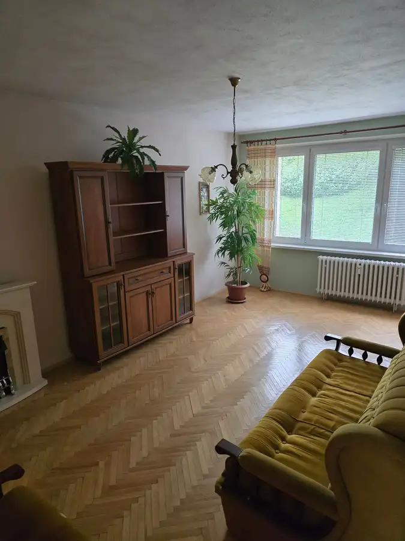
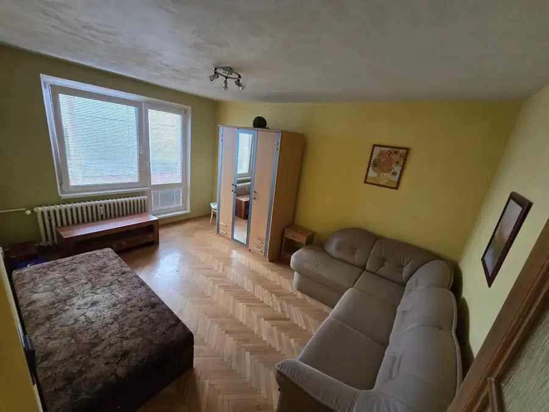
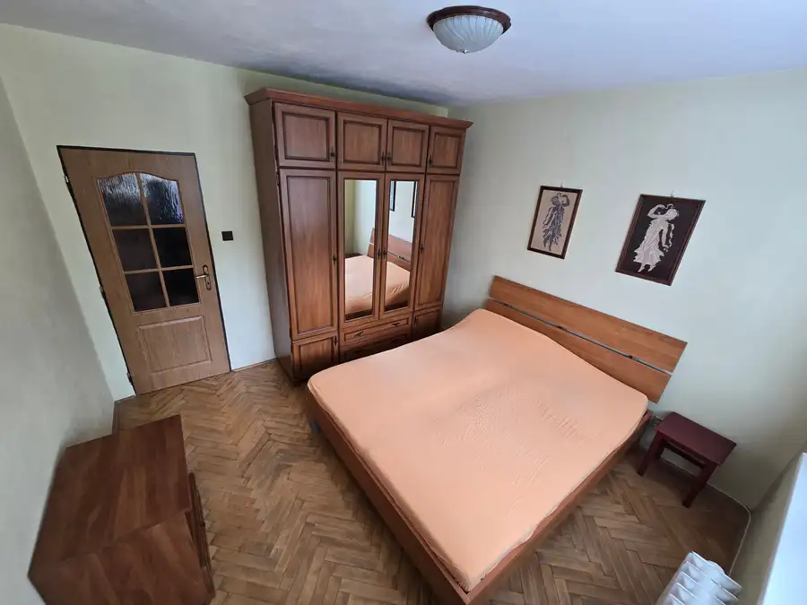
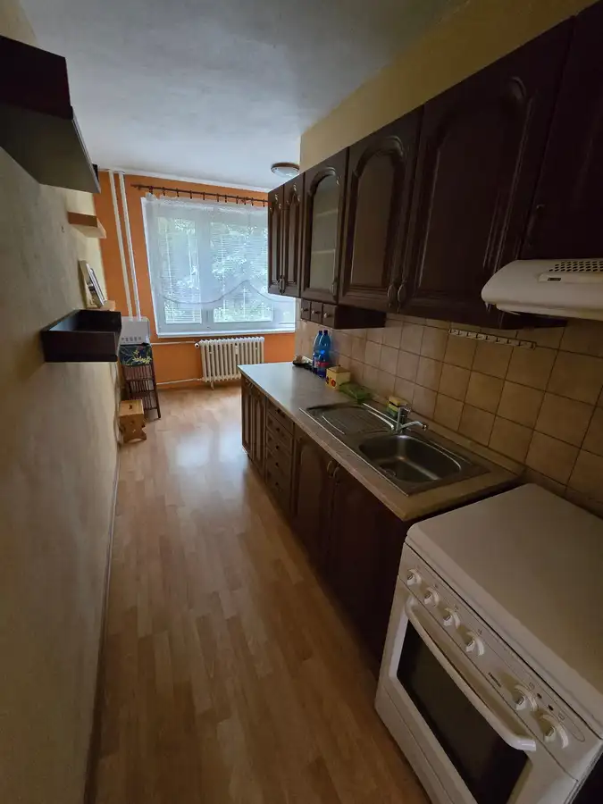
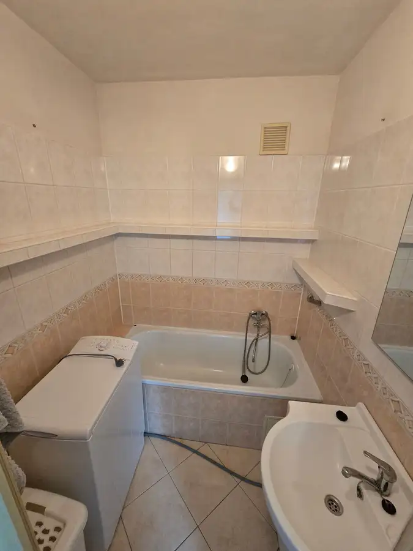
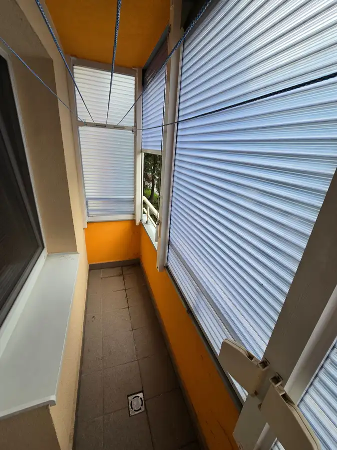

3 izbový byt Fončorda Banská Bystrica
Banská Bystrica







- Dispozícia3-izbový
- Plocha81.66 m²
- Poschodie2. z 8
- StavČiastočná rekonštrukcia
- VlastníctvoOsobné
O nehnuteľnosti
MLreality exkluzívne ponúka na predaj čiastočne zrekonštruovaný 3 izbový byt v obľúbenej časti Banskej Bystrice na ulici THK. Byt o celkovej rozlohe 82 m2 sa nachádza na 2 z 8 poschodí s moderným výťahom. Dispozícia pozostáva z priestrannej obývačky, spálne s výstupom do väčšej lodžie, tretej izby, kuchyne, komory s výstupom na mini lodžiu, vstupnej chodby, kúpelne a samostatného WC. Byt prešiel dávnejšou rekonštrukciou, vrátane čiastočnej výmeny elektriny a vody, jadro je murované, okná plastové s dobrou funkčnosťou, vstupné dvere sú bezpečnostné a protipožiarne zn. ADLO, samozrejmosťou je prislúchajúca murovaná pivnica v suteréne. Nehnuteľnosť bez ťarchy je vhodná k okamžitému nasťahovaniu, ale aj k rekonštrukcii podľa náročnosti klienta. Bytový dom je zateplený a kompletne zrekonštruovaný, vrátane spoločných priestorov, nových stupačiek aj výťahu !Nachádza sa v jednej z najlepších lokalít sídliska, v tichom prostredí s množstvom zelene a detských ihrísk naokolo, v blízkosti všetko potrebné k spokojnému bývaniu vrátane skvelých susedov či bezproblémového parkovania.V cene je zahrnutý kompletný právny a realitný servis.Obhliadku a ďalšie informácie si môžete dohodnúť na tel. čísle 0905 622 072 alebo cez e-mail: mlauner@mlreality.sk V prípade záujmu o kúpu nehnuteľnosti, Vám náš špecialista /0917 369 986/ bezplatne sprostredkuje a nastaví podmienky podľa vašich možností. Spolupracujeme so všetkými inštitúciami na Slovensku.PONÚKAME VÁM:- kvalitný servis a služby po celom Slovensku- nestrannosť pri obchode, férové jednanie a dohodnutie najlepšej ceny- poradíme Vám ako najlepšie predať či kúpiť nehnuteľnosť- obhliadky a nábor nehnuteľností zabezpečujeme školenými maklérmi- inzerujeme na TOP realitných portáloch- zmluvy garantované právnikom- odbornú pomoc a rady pri prevode nehnuteľnosti kupujúcemu/predávajúcemu
Parametre
- Bezpečnosť
- Bezpečnostné dvere, Kamerový systém, Elektronický zámkový systém
- Cena vrátane energií
- Nie
- Druh
- 3 izbový byt
- Dátum zverejnenia
- 01. 06. 2026
- Energetická náročnosť
- Z klasických materiálov
- Energetický certifikát budovy
- V príprave
- Energie
- 220
- Podlažie
- 2
- Počet izieb / miestností
- 3
- Počet lodžií
- 2
- Počet nadzemných podlaží
- 8
- Počet pivníc
- 1
- Počet spální
- 3
- Stav nehnuteľnosti
- Čiastočná rekonštrukcia
- Typ
- Predaj
- Typ konštrukcie
- Panelová
- Vlastníctvo
- Osobné
- Vybavenie
- Lodžia, Pivnica, Špajza, Práčovňa, Kočikáreň, Detské ihrisko
- Vykurovanie
- Ústredné
- Zariadenie
- Čiastočne zariadené
- Úžitková plocha
- 81.66 m²